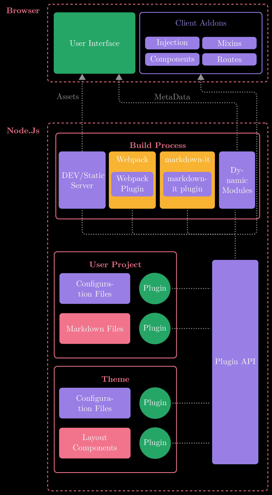

\documentclass[tikz,11pt]{standalone}
\usepackage{tikz}
\usetikzlibrary{shapes.geometric,shapes.symbols,fit,positioning,shadows}
\usetikzlibrary{arrows, arrows.meta, backgrounds, calc, shapes.misc, positioning}
\begin{document}
% Finish off green box and then browser outline tmmr
\tikzset{
purpleBox/.style n args={3}{
text centered, fill=purpleVue, minimum width = #1, minimum height= #2, text=white,
text width = #3,
rounded corners
},
redBox/.style n args={3}{
text centered, fill=redVue, minimum width = #1, minimum height= #2, text=white,
text width = #3,
rounded corners
},
orangeBox/.style n args={3}{
fill=orangeVue, minimum width = #1, minimum height= #2, text=white,
text centered,
rounded corners
},
greenCircle/.style n args={3}{
fill=greenVue, minimum width = #1, minimum height= #2, text=white,
text centered,
circle
},
lineCustom/.style={
very thick,
color=gray,
dotted,
shorten <=2pt,
shorten >=2pt
},
arrowCustom/.style={
>=triangle 60,
->,
very thick,
color=gray,
dotted
},
}
\definecolor{purpleVue}{rgb}{0.6,0.5,0.9}
\definecolor{orangeVue}{rgb}{0.975,0.7,0.2}
\definecolor{greenVue}{rgb}{0.15,0.65,0.4}
\definecolor{redVue}{rgb}{0.95,0.45,0.55}
% Hardcoded positioning
\begin{tikzpicture}[background rectangle/.style={fill=black}, show background rectangle]
% Browser Box that wraps around UI and Client Addons box
\node[rounded corners, draw,
double=redVue, %% here
double distance =1pt, minimum height= 9.5em, minimum width=27em, dashed]
(Browser) {};
% Label for browser
\node[rounded corners,
text=redVue] at ([xshift=-3em, yshift=4em]
% See https://tex.stackexchange.com/questions/27843/level-of-boldness-changeable
Browser.west) (BrowserLabel) {\fontseries{bx}\selectfont Browser};
% Green box in upper left
\node[rounded corners, fill=greenVue, text=white, minimum height= 7.5em, minimum width=10em, text centered, right = 0.75em of Browser.west] (UI) {User Interface};
% Purple box in upper right
\node[rounded corners, %fill=black,
text depth = 5em, minimum width=15em,
draw,
double=purpleVue, %% here
double distance =1pt, %% here
%font=\Large,
minimum height= 7.5em,
text=purpleVue, right = 0.5 em of UI] (CA){Client Addons};
% Hardcoded nodes
\node[purpleBox={6em}{1.5em}{6em}] at ([xshift=-3.5em] CA.center){Injection};
\node[purpleBox={6em}{1.5em}{6em}] at ([xshift=3.5em] CA.center) (Mix) {Mixins};
\node[purpleBox={6em}{1.5em}{6em}] at ([xshift=-3.5em, yshift=-2em] CA.center) (comp) {Components};
\node[purpleBox={6em}{1.5em}{6em}] at ([xshift=3.5em, yshift=-2em] CA.center) (routes) {Routes};
% Mix is used as an example node to use offset
% \node[rounded corners, fill=greenVue, text=white, minimum height= 7.5em, minimum width=10em, text centered, right = 0.75em of Mix] (UI2) {User Interface};
% Node Js Box
\node[rounded corners, draw,
double=redVue, %% here
double distance =1pt, minimum height= 45em, minimum width=27em, dashed, below = 5 em of Browser]
(Nodejs) {};
% Label for browser
\node[rounded corners,
text=redVue] at ([yshift=-14em]
BrowserLabel.south){\fontseries{bx}\selectfont Node.Js};
\node[rounded corners, %fill=black,
text depth = 5em, minimum width=15em,
draw,
double=redVue, %% here
double distance =1pt, %% here
%font=\Large,
minimum height= 10.5em,
minimum width= 25em,
text=redVue] at ([yshift=-6.5em]
Nodejs.north) (BProcess){};
% Label Node, seperate node is used
% to have control over node positioning
\node[text=redVue] at ([yshift=-1.5em]
BProcess.north) {\fontseries{bx}\selectfont Build Process};
\node[purpleBox={5.75em}{7em}{5em}] at ([xshift=3.25em, yshift=-0.5em] BProcess.west) (devStatic){DEV/Static Server};
%% WEBPACK CODE
% Sample label label={[anchor=north, draw=red, inner sep=0pt, yshift=-0.2em]north:Webpack}
\node[orangeBox={5.75em}{7em}{5em}, label={[anchor=north, inner sep=0pt, yshift=-0.6em, text=white]north:Webpack}] at ([xshift=6.15em] devStatic.center) (webpack) {};
\node[purpleBox={4.5em}{3em}{4.5em}] at ([yshift=-0.5em] webpack.center) (webpackPlugin) {Webpack Plugin};
% MARKDOWN IT BOX
\node[orangeBox={6.75em}{7em}{5em},label={[anchor=north, inner sep=0pt, yshift=-0.6em, text=white]north:markdown-it}] at ([xshift=6.75em] webpack.center) (markdownIt) {};
\node[purpleBox={5.25em}{3em}{5.25em}] at ([yshift=-0.5em] markdownIt.center) (webpackPlugin) {markdown-it plugin};
\node[purpleBox={3.75em}{7em}{3.75em}] at ([xshift=2.7em] markdownIt.east) (dynMod){Dynamic Modules};
% USER PROJECT
\node[rounded corners, %fill=black,
text depth = 5em,
draw,
double=redVue, %% here
double distance =1pt, %% here
%font=\Large,
minimum height= 13em,
minimum width= 15em,
text=redVue, label={[anchor=north, inner sep=0pt, yshift=-1.2em, text=redVue] north:{\fontseries{bx}\selectfont User Project}}] at ([xshift=-2cm, yshift=-10.5em]
BProcess.south) (UP){};
% Configuration Files and Plugin box
\node[purpleBox={8em}{3.75em}{8em}] at ([xshift=5em, yshift=2em] UP.west) (confFiles){Configuration Files};
\node[greenCircle={2em}{2em}{2em}] at ([xshift=3em] confFiles.east) (CFP1){Plugin};
\node[redBox={8em}{3.75em}{8em}] at ([yshift=-3em] confFiles.south) (markFiles){Markdown Files};
\node[greenCircle={2em}{2em}{2em}] at ([xshift=3em] markFiles.east) (CFP2){Plugin};
% THEME BLOCK
\node[rounded corners, %fill=black,
text depth = 5em,
draw,
double=redVue, %% here
double distance =1pt, %% here
%font=\Large,
minimum height= 13em,
minimum width= 15em,
text=redVue, label={[anchor=north, inner sep=0pt, yshift=-1.2em, text=redVue] north:{\fontseries{bx}\selectfont Theme}}] at ([yshift=-7.5em]
UP.south) (theme){};
% Configuration Files and Plugin box
\node[purpleBox={8.75em}{3.75em}{7em}] at ([xshift=5em, yshift=2em] theme.west) (tconfFiles){Configuration Files};
\node[greenCircle={2em}{2em}{2em}] at ([xshift=3em] tconfFiles.east) (tCFP1){Plugin};
% Figure out non hacky way
\node[redBox={8.75em}{3.75em}{7em}] at ([yshift=-3em] tconfFiles.south) (tLayoutComp){Layout Components};
\node[greenCircle={2em}{2em}{2em}] at ([xshift=3em] tLayoutComp.east) (tCFP2){Plugin};
% Plugin API
\node[purpleBox={5em}{25em}{5em}] at ([xshift=9.5em, yshift=-17.5em]
BProcess.south) (pluginAPI){Plugin API};
% Paths
% \path[color=white] (pluginAPI) -- (dynMod);
% Make path style
% latex'-
% \draw[->,>=latex,very thick, color=gray,dotted] (pluginAPI) -- (pluginAPI |- dynMod.south);
\draw[lineCustom] (pluginAPI) -- (pluginAPI |- dynMod.south);
\draw[lineCustom] (CFP1) -- (CFP1 -| pluginAPI.west);
\draw[lineCustom] (CFP2) -- (CFP2 -| pluginAPI.west);
\draw[lineCustom] (tCFP1) -- (tCFP1 -| pluginAPI.west);
\draw[lineCustom] (tCFP2) -- (tCFP2 -| pluginAPI.west);
\draw[arrowCustom] (devStatic) -- (devStatic |- UI.south) node [midway, left, yshift=2em] {Assets};
% Super advanced arrow
\draw[lineCustom, rounded corners=5pt] (dynMod) |- ($(comp.south) + (0, -4.5em)$) node[above] {MetaData};
\draw[arrowCustom, rounded corners=5pt] ($(comp.south) + (0, -4.5em)$) -| ( $(UI.south) + (3em, 0)$);
\draw[lineCustom, rounded corners=5pt] (devStatic.south) |- ($0.5*(dynMod.south)+0.5*(pluginAPI.north)$);
\draw[lineCustom, rounded corners=5pt] ($0.5*(dynMod.south)+0.5*(pluginAPI.north)$) -| ($(routes.south) + (3.35em, -4.5em)$);
\draw[lineCustom, rounded corners=5pt] ($(routes.south) + (3.35em, -4.85em)$) |- ($(routes.south) + (0, -3.23em)$);
\draw[arrowCustom, rounded corners=5pt] ($(routes.south) + (0.25em, -3.23em)$) -| (CA.south);
% Webpack to end line below
\draw[lineCustom, rounded corners=5pt] (webpack.south) |- ($0.5*(dynMod.south)+0.5*(pluginAPI.north)$);
\draw[lineCustom, rounded corners=5pt] (markdownIt.south) |- ($0.5*(dynMod.south)+0.5*(pluginAPI.north)$);
\end{tikzpicture}
\end{document}Created by David Li